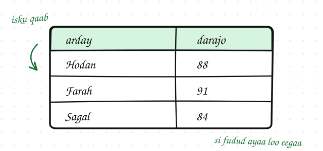
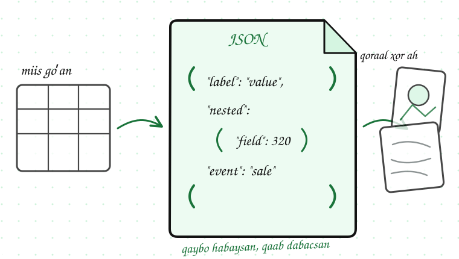
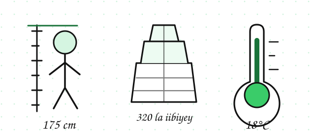

Noocyada xogta
Waxaad awoodi doontaa inaad kala garato xog habaysan (structured data), xog qayb ahaan habaysan (semi-structured data), iyo xog aan habaysnayn (unstructured data), isla markaana kala saarto xog tiro (quantitative data) ah iyo xog sifayn (qualitative data) ah.
Dulmar
Milkiile dukaan ayaa furay jadwal (spreadsheet). Waxaa ku qornaa iibkii toddobaadkii hore. Wuxuu ku arkay tirooyin, magacyada alaabta, iyo faallooyinka macaamiisha. Qaar waxay si hagaagsan ugu jiraan safaf (rows) iyo tiirar (columns), qaar kalena waa qoraallo dhaadheer.
Si xogtaas loo fahmo, marka hore waa in la gartaa nooca ay tahay.
Xog Habaysan, Qayb ahaan Habaysan, iyo Aan Habaysnayn
Xog habaysan (structured data)
Xog habaysan (structured data) waxay leedahay qaab cad oo la saadaalin karo. Badanaa waxay si hagaagsan ugu jirtaa safaf (rows) iyo tiirar (columns), sida database table ama jadwal (spreadsheet).

- Jadwal ay ku qoran yihiin magacyada iyo darajooyinka ardayda
- Database table oo lagu kaydiyey dalabaadka macaamiisha
- Fayl CSV oo ay ku qoran yihiin qiimaha alaabta
Xog aan habaysnayn (unstructured data)
Xog aan habaysnayn (unstructured data) ma laha qaab goʼan. Way adag tahay in si toos ah loogu habeeyo safaf iyo tiirar.
- Iimayllo
- Qoraallada baraha bulshada
- Sawirro iyo muuqaallo
- Codadka laga duubay wicitaannada adeegga macaamiisha
Xog qayb ahaan habaysan (semi-structured data)
Xog qayb ahaan habaysan (semi-structured data) waxay u dhexaysaa labadaas. Waxay leedahay qaybo habaysan, laakiin kuma xirna qaabka miiska database-ka.
JSON waa tusaale fiican. Wuxuu xogta u kala saaraa magacyo iyo qaybo isku dhex jira. Sidaas awgeed, wuu ka habaysan yahay qoraal caadi ah, laakiin uma laha qaab goʼan sida database table.

Badanaa hal mashruuc (project) ayaa wada isticmaala saddexda nooc. Shirkaddu waxay dalabaadka ku kaydin kartaa database habaysan. Faallooyinka macaamiishu waxay noqon karaan qoraal aan habaysnayn. Dhacdooyinka app-kuna waxay noqon karaan JSON qayb ahaan habaysan.
database habaysan
qoraal aan habaysnayn
JSON qayb ahaan habaysan
Xog Tiro ah iyo Xog Sifayn ah
Xog tiro ah (quantitative data)
Xog tiro ah (quantitative data) waa xog lagu tirin karo ama lagu cabbiri karo tirooyin.

- Dhererka qofka: 175 cm
- Tirada alaabta la iibiyey: 320
- Heerkulka: 18°C
Xog sifayn ah (qualitative data)
Xog sifayn ah (qualitative data) waxay sharxaysaa sifo ama koox. Badanaa waxay ku timaaddaa erayo ama magacyo.
- Faallada macmiilka: “Adeeggu aad buu u fiicnaa”
- Midabka alaabta: “buluug”
- Jawaabta sahanka: “waan ku qanacsanahay”
Midabka alaabta iyo heerka qanacsanaanta waxaa sidoo kale loo yaqaan xog kooxeed (categorical data). Xogta noocan ahi waxay wax u kala saartaa kooxo, halkii ay tiro ku cabbiri lahayd.
Maxay noocyada xogtu muhiim u yihiin?
Markaad garato nooca xogta, waxaad si fudud uga jawaabi kartaa suʼaalahan:
Waxaad xisaabin kartaa celceliska xog tiro ah, sida tirooyinka iibka. Laakiin xog sifayn ah, sida fiican iyo aad u fiican, si toos ah celceliska ugama xisaabin kartid. Marka hore waa inaad kala kooxaysaa ama si kale u diyaarisaa.